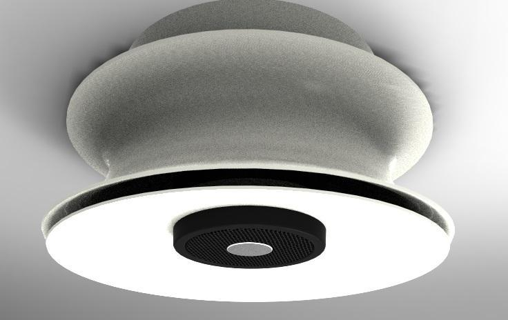

A combined ventilation valve and loudspeaker that controls air pressure, noise and full-spectrum sound through the same opening.
Designed for forced-air systems where conventional noise cancellation performs poorly, especially in the 10–100 Hz range.
Energy-efficient HVAC
Low-frequency noise control
Embedded & electronics